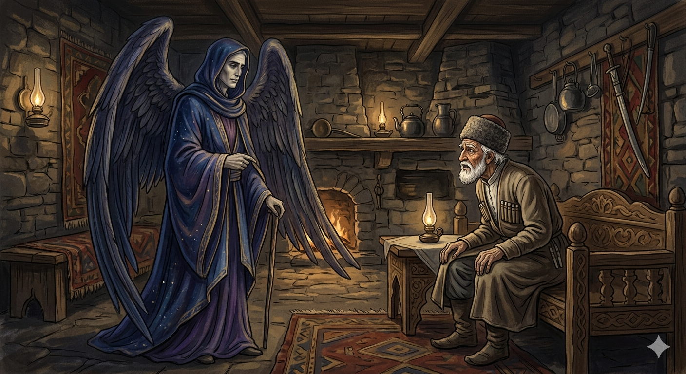

И.А. Дахкильгов. Хьехаме дувцарш - поучительные рассказы-притчи.
И.А. Дахкильгов. Хьехаме дувцарш - поучительные рассказы-притчи. Из ингушского фольклора.

Дукха хоамаш хиннад хьона
Цхьан къонахчои Мулкалмовтои вӀаший доттагӀал тесса хиннад. Ший ха хилча, къонах волча саготалла доагӀаш хиннад Мулкалмовта. Дикка вӀаший дог ийна хиннаб уж. Цкъа шоаш дуаш-молаш багӀаш, Мулкалмовтага аьннад къонахчо: - Ший ханнахьа со а дӀахьоргва Ӏа. Иштта да хьона тӀадужадаь декхар, ха тӀехъяьккхар е хьа е са кара дац, хьога аз из деха а дехац. ЦаӀ-м дехаргда аз хьогара, вай доттагӀий хиларца. Цхьа хӀама де йиш яр хьа: хьалхе а хьахейта сога са Ӏоажала ди. Из хоам Ӏа сона боре, лийча, корта тесса, мӀараш дӀаяха, кийчлургвар со. - Хьалхе а хоамаш хургда хьона, - аьннад Мулкалмовта. Шу-шерага доалаш, дукха ха дӀаяхай. Цкъа цӀагӀа чудаьннача Мулкалмовто аьннад къонахчунга: - Ха хаьдай хьа! Воле, долх вай! - Айя, фуд Ӏа дувцар! Хьох доттагӀа лоархӀаш, хьогара аз Ӏоажалах бола хоам хьалхе бе, аьнна, дийхача, сона жоп ма деннадарий Ӏа! Деша да хӀана хиланзар хьо? - Даьра, хиннад со сай дош чӀоагӀа долаш! ЦаӀ хинна а ца Ӏеш, дукха хиннад хьона хоамаш. Корта кӀайбалар - хоам беце хьона? Сийрдача бӀаргий са мелдалар беце хьона хоам? Багар царгаш йожар хоам беце хьона? Кура леладаь дегӀ букарадерзар беце хьона хоам? Болар кадай хинна хьо халла ши ког текхабеш лелар хоам беце хьона? Кхы мел хоам хьайга байта воаллар хьо? Воле, совдар ца а дувцаш! Ший доттагӀчун са а ийца, сигала хьаладахад Мулкалмовта.
РУССКИЙ
Тебе было много оповещений
Некий мужчина дружил с ангелом смерти Мулкалмовтом, который спешил к нему в гости, как только у ангела выпадало свободное время. Они привязались друг к другу. Однажды они пировали, и мужчина сказал ангелу смерти: "Поскольку мы с тобою друзья, прошу тебя заранее оповестить меня о дне, когда соберешься забрать мою душу. Я бы тогда выкупался, остриг волосы и ногти". Продлить свою жизнь мужчина не просил, потому что он знал, что это не во власти ангела. Дружба их длилась долго, но вот однажды ангел смерти вошел к другу и сказал: - Собирайся, пришла твоя пора! - Как же так! - поразился тот, - ведь я, как друга, просил тебя заранее оповестить меня о приближающемся дне моей смерти! - Мне не было нужды дополнительно оповещать тебя. Тебе и так было много оповещений. Голова твоя поседела - разве это не весть тебе? Твои зоркие глаза потускнели - разве это не весть тебе? Твоя стройная фигура согнулась - разве это не весть тебе? Ходишь ты теперь еле-еле - разве это не весть тебе? Сколько тебя еще нужно было оповещать? Не возмущайся и пошли. Ангел смерти Мулкалмовт забрал душу своего друга и вознесся на небо.
ENGLISH
You've had a lot of notifications
A certain man was friends with Mulkalmowth, the Angel of Death, who would hurry to visit him whenever the angel had a spare moment. They grew very close. One day, whilst they were feasting, the man said to the Angel of Death: 'Since we are friends, I ask you to let me know in advance the day you intend to take my soul. I would then have a bath and trim my hair and nails.' The man did not ask for his life to be prolonged, because he knew that was beyond the angel's power. Their friendship lasted a long time, but one day the Angel of Death came to his friend and said: 'Get ready, your time has come!' 'How can that be!' exclaimed the man, 'I asked you, as a friend, to let me know in advance of the approaching day of my death!' 'I had no need to give you any further warning. You've had plenty of warnings already. Your hair has turned grey - is that not a sign to you? Your keen eyes have dimmed - is that not a sign to you? Your once-slender figure has stooped - is that not a sign to you? You can barely walk now - is that not a sign to you? How many more warnings did you need? Do not be upset; just go. The Angel of Death, Mulkalmovt, took his friend's soul and ascended to heaven.
НОХЧИЙН
ПОГОВОРКИ
Бегех дикадар даьннадац. - Шутки до добра не доводят. Венначоа цхьа къахетам бийхача, дийначоа итта беха беза. - Если о покойнике один раз скажут "за упокой", то о живом надо десять раз сказать "во здравие". ГӀарагӀура кӀоригаш а йиа, цогало яьхад: "Вай доттагӀий долаш фу бе я уж ейнараш, хьа кӀоригаш е са кӀоригаш яр аьнна". - Съела лиса журавлят и сказала: "Раз мы друзья, что за разница, твои ли, мои ли детеныши пропали!" Дикача дина ший баьри тӀахарах вовз. - Хороший конь узнает своего всадника, лишь только он сядет в седло. Цхьоалли къелли цхьатарра я. - Одиночество и бедность одинаковы. Ӏайха наьха кий яьккхача, хьайяр тӀаьн кӀала йолла. - Сорвал с другого шапку, свою зажми под мышку. Езачунна эрий ара а воахалу. - С любимой и в дикой степи проживешь. Сага дешар эшаш да, лаьтта догӀа санна. - Человеку нужна учеба, как дождь нужен иссохшей земле. ХӀама дуача наха Ӏаг лелабаьб. - Ложки есть у тех, у кого еда водится. УстагӀан тӀера тха дукхаза лорг, цӀока цкъа мара яьккхац. - Овцу стричь можно много раз, но освежевать - лишь раз. Фуаши хийи мелла кхехкадарах вӀаший эц. - Сколько ни вари воду и яйца, они не смешиваются.